Your City. Your Journey. Discover the Garden City, one thoughtful
stop at a time.
Recommended for You
Heritage
Bangalore Palace
Built in 1878 after Windsor Castle, Bangalore Palace is a
Tudor-style landmark featuring fortified towers and
vine-covered walls. Once home to the Wadiyar dynasty, it now
serves as a premier heritage museum and cultural venue in
Bengaluru.
Garden
Cubbon Park
Established in 1870, Cubbon Park is a sprawling 300-acre green
lung in the heart of Bengaluru, home to lush bamboo groves,
vibrant flowering trees, and over 6,000 plants.
Spiritual
Isckon Temple
Inaugurated in 1997 in Rajajinagar, the ISKCON Temple is one
of the largest Radha-Krishna complexes in the world, blending
traditional Dravidian and modern glass architecture as a major
spiritual and cultural landmark in Bengaluru.
Shopping
MG Road
Stretching from Trinity Circle to Anil Kumble Circle, Mahatma
Gandhi (MG) Road is Bengaluru's bustling commercial and
cultural spine, known for its upscale boutiques, historic
bookshops, and vibrant cafes blends colonial-era charm with
modern urban nightlife.
Art and Culture
National Gallery of Modern Art
Housed in the heritage Manikyavelu Mansion on Palace Road, the
National Gallery of Modern Art (NGMA) Bengaluru showcases
around 500 works of Indian art spanning from the early 18th
century to the present day.
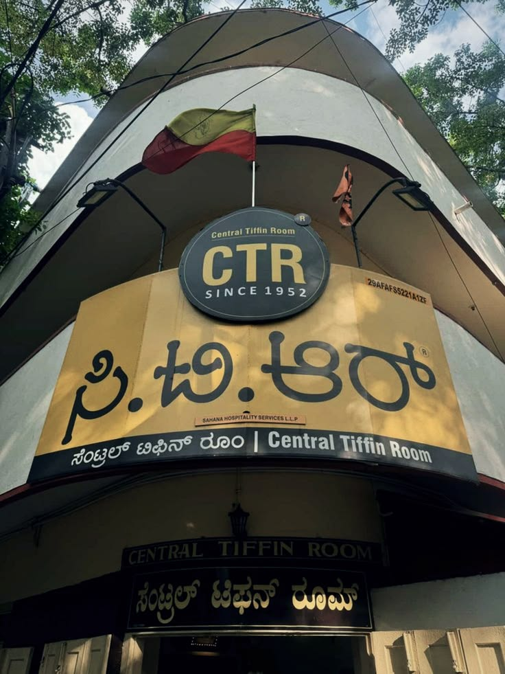
Food
Central Tiffin Room
Established in the 1920s in Malleshwaram, Central Tiffin Room
(CTR) is an iconic Bengaluru eatery celebrated for its crisp,
golden benne masala dosa and frothy filter coffee.
Food
Vidyarthi Bhavan
A legendary Bengaluru restaurant famous for its crispy benne
dosa and traditional South Indian breakfast. Located in Gandhi
Bazaar, it is a popular destination for food lovers.
Food
MTR
Known for its traditional South Indian cuisine, MTR is a
historic Bengaluru restaurant serving authentic breakfast,
lunch and dinner experiences.
Food
Rameshwaram Cafe
A popular South Indian food destination known for its
ghee-rich dosas, idlis, coffee and lively dining atmosphere.
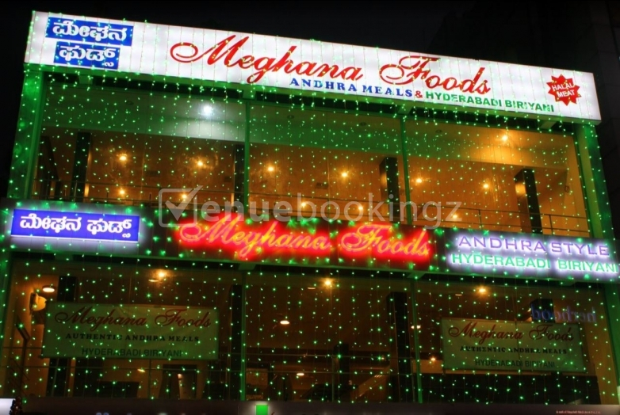
Restaurant
Meghana Foods
A well-known restaurant offering Andhra-style cuisine,
biryani, spicy dishes and a variety of Indian meals.
Restaurant
Nagarjuna
A Bengaluru favourite serving Andhra-style meals, spicy
curries, biryani and traditional South Indian flavours.
Restaurant
Truffles
A popular casual dining restaurant known for burgers, pasta,
sandwiches and a relaxed atmosphere for friends and families.
Dessert
Corner House
A beloved Bengaluru dessert destination famous for ice creams,
sundaes and its iconic Death by Chocolate.
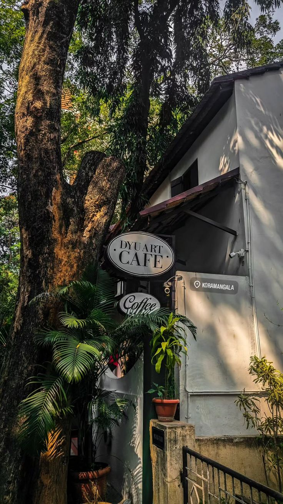
Cafe
DYU Art Cafe
A cozy cafe known for its artistic atmosphere, relaxed
ambience, coffee and food. A perfect place to spend time with
friends or enjoy a peaceful cafe experience.
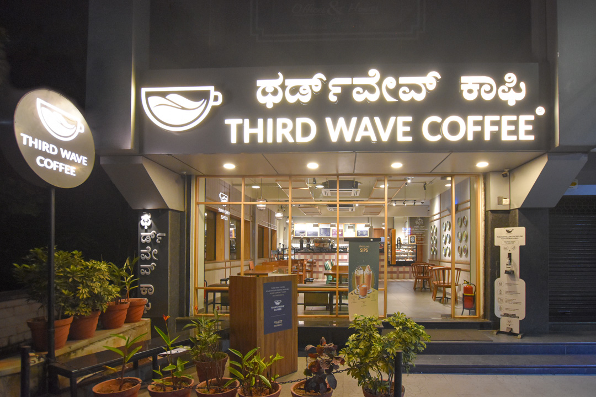
Cafe
Third Wave Coffee
A modern coffee chain offering speciality coffee, desserts,
snacks and comfortable spaces for working or meeting friends.
Cafe
Matteo Coffee
A popular coffee spot offering a variety of coffee beverages,
desserts and a relaxed cafe atmosphere in Bengaluru.
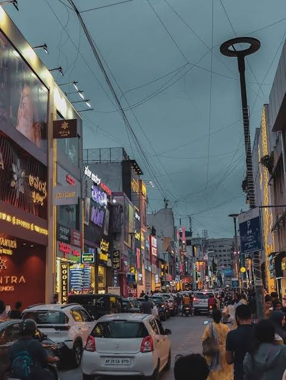
Shopping
Commercial Street
A bustling shopping destination known for clothing, footwear,
accessories, jewellery, street shopping and vibrant markets.
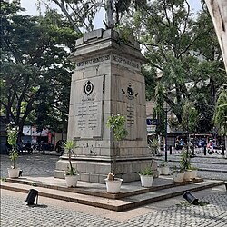
Shopping
Brigade Road
A lively Bengaluru street filled with shopping outlets,
restaurants, cafes, boutiques and entertainment destinations.
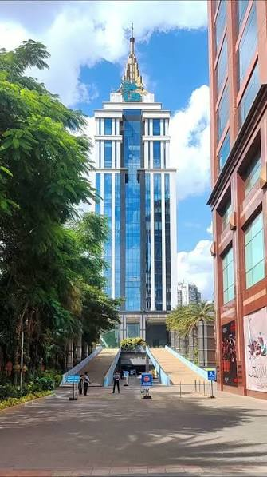
Luxury Shopping
UB City
A premium lifestyle destination featuring luxury brands, fine
dining restaurants, cafes and elegant architecture in central
Bengaluru.
Shopping
Orion Mall
A popular shopping and entertainment destination featuring
fashion stores, restaurants, cafes, a cinema and entertainment
activities.
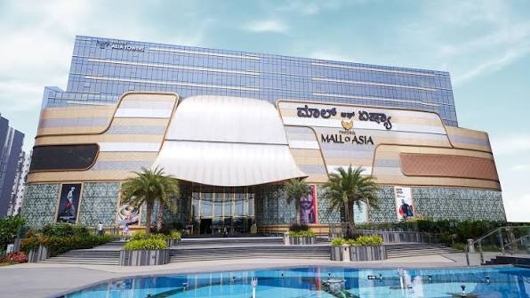
Shopping
Phoenix Marketcity
A large shopping and entertainment destination with
international brands, restaurants, cinema experiences and
activities.
Garden
Lalbagh Botanical Garden
A historic botanical garden featuring beautiful landscapes,
rare plants, glasshouse architecture, walking paths and a
peaceful environment.
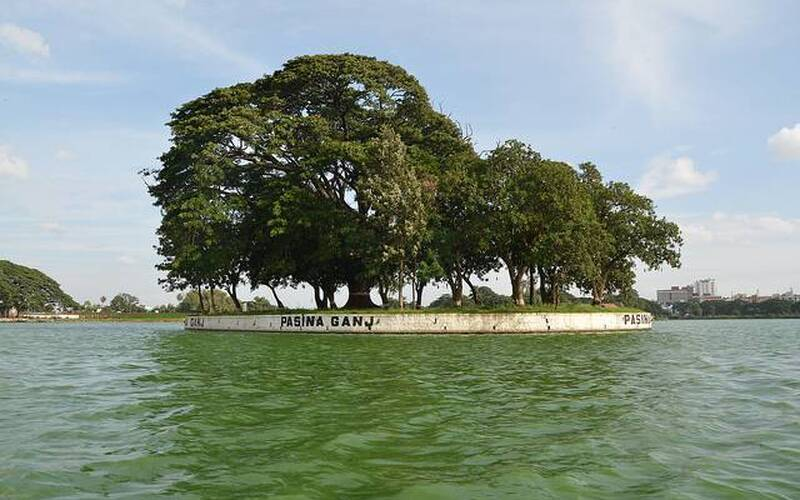
Nature
Ulsoor Lake
A scenic lake in Bengaluru offering peaceful surroundings,
walking areas and beautiful views of the water and nearby
greenery.
Nature
Sankey Tank
A peaceful lake surrounded by greenery, popular for morning
walks, evening strolls and enjoying nature away from city
traffic.
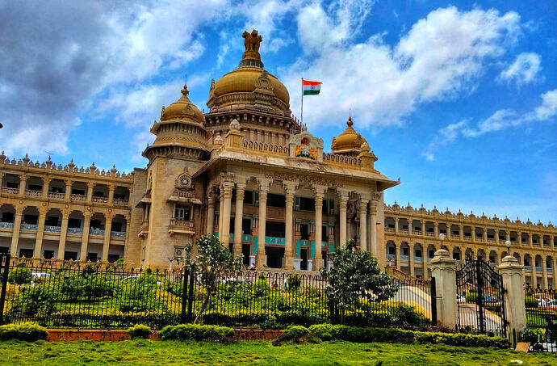
Landmark
Vidhana Soudha
An iconic Bengaluru landmark featuring impressive architecture
and serving as the seat of the Karnataka state legislature.
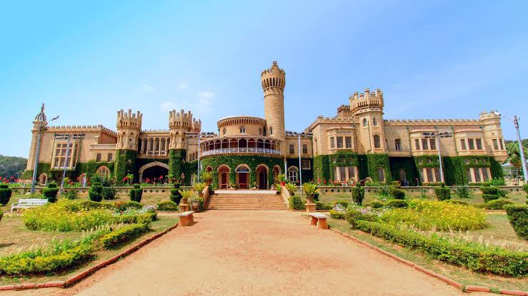
Heritage
Tipu Sultan's Summer Palace
A historic palace featuring Indo-Islamic architecture, ornate
wooden pillars, beautiful interiors and stories from
Bengaluru's royal past.
My Trip
Your personalized Bengaluru travel itinerary
0Destinations
🧳
Your trip is empty!
Start exploring Bengaluru and add destinations to your trip.
Explore Bengaluru on Map
Discover restaurants, cafes, shopping destinations, nature spots
and heritage places around the city.